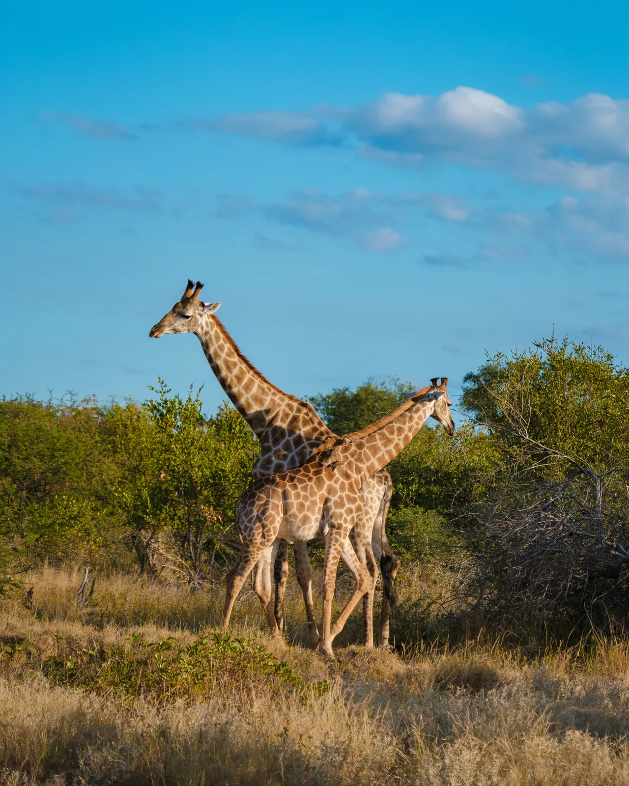

Lake Manyara National Park
Groundwater forest, flamingo shores and the Rift Valley wall rising steeply above.
Lake Manyara is a park of contrasts compressed into a narrow strip of land. On one side, the western wall of the Great Rift Valley rises sharply, its slopes cloaked in woodland. On the other, a shallow soda lake stretches away, edged with grassland and, at times, pink with flamingos. In between lie forest, swamp and acacia woodland, all within easy reach of a single game drive. It is a place that rewards those who slow down and notice the small things.
The journey begins in an unexpected place: a lush groundwater forest, fed by springs flowing from the escarpment. Tall mahogany and fig trees shade the road, and troops of olive baboons fill the clearings, while blue monkeys watch from the canopy. Emerging onto the open shoreline, the view widens to herds of buffalo, zebra and wildebeest, giraffes browsing the acacias and hippos gathered in the pools, often accompanied by a remarkable variety of waterbirds.
Manyara has long been associated with lions that rest in the branches of acacia trees. Sightings are never predictable, but finding one draped along a branch is a memorable experience. Because it is compact and just a short drive from Karatu, the park fits easily into a wider northern circuit safari, often as a relaxed half day before or after the Crater, or as an introduction to Tanzania's wildlife. Its scale makes it easy to enjoy without fatigue.
What makes it extraordinary.
Who you might meet.
From our guides
The rhythm of the seasons.
Finding your way.
Highlighted areas show this destination. Select any other place on the map to explore it next.
Lodges & camps we love.
Places we use on our own itineraries, chosen for setting, comfort and warm service. Upgrades are always possible.
Journeys that go there.
Ways to go deeper.
Questions, answered.
Still curious? Our team in Arusha knows these places intimately.
How long do I need in Lake Manyara?
A half day is enough to explore the forest, the shoreline and the hippo pool, while a full day allows a more relaxed pace and more time for birdlife and wildlife. Many travellers visit on the way to or from the Crater or Tarangire, as the park is just around 35 minutes from Karatu and about two hours from Arusha.
Will I see tree-climbing lions?
Lions in Manyara are known for occasionally resting in acacia trees, but sightings are unpredictable and not a daily occurrence. Lions in other parks sometimes climb trees too. If you are fortunate enough to see one, it is a memorable experience, but we prefer to set expectations honestly: think of it as a wonderful bonus.
Is Lake Manyara worth visiting?
Yes, especially as part of a wider safari. It offers a different experience from the open savannah parks: groundwater forest, primates, flamingos and the Rift Valley escarpment. It is compact and accessible, making it ideal for a shorter safari or as a gentle introduction to Tanzania's wildlife before the larger parks.
When will I see flamingos?
Flamingo numbers depend on water levels and food availability, so they vary from year to year and season to season. They are often present on the lake, sometimes in large numbers, and the green season from November to April is generally good for waterbirds. Your guide will know where they have recently been gathering.
Is Lake Manyara good for children?
Very good. The short drive from Karatu, the playful baboons and the hippo pool make it a favourite with families. Game drives can be kept shorter, and the variety of scenery helps keep younger travellers engaged. We often recommend it as a first park for families before longer drives elsewhere.
Can I combine Manyara with other parks?
Easily. It is often paired with Tarangire and the Ngorongoro Crater for a classic two to four day safari, or included in longer itineraries with the Serengeti. It also combines well with a cultural visit to Lake Eyasi, since both are reached from a base in Karatu. We will suggest the order that works best for your dates.